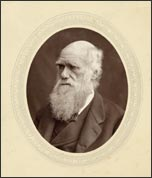

Charles Darwin
1809–1882
As a young boy in England, Charles Darwin enjoyed roaming the countryside and exploring his family's garden. He enjoyed collecting things such as minerals, insects, coins, and stamps. No one could have imagined how his passion for collecting would one day revolutionize science.
His mother died when he was eight years old. As he grew, his father, a physician, persuaded him to attend medical school. He never earned his medical degree, however, because he found his courses boring and medical techniques distasteful. Eventually he enrolled in another school, where he studied science and theology. At the time, most scientists in England were members of the clergy, and Darwin thought the life of a clergyman would allow him to pursue his studies of nature.
When Darwin was 22 years old, he got the opportunity of a lifetime: a former teacher recommended that he travel aboard the HMS Beagle and serve as the ship's naturalist during a five-year voyage around the world. The young man jumped at the chance. During the journey, he observed living things and collected specimens from many exotic places. In the course of his travels, he discovered a world of new species he'd never known existed. He kept detailed records, collected fossils and live specimens, and sketched plants and animals in his notebooks.
It was during this time that Darwin began to develop his ideas about the relationship among all living things. His ideas were not accepted by most people at the time, however, and he hesitated to make them public. He finally published his theory of evolution in 1859, at the age of fifty. His book, Origin of Species, sparked a major controversy, but eventually helped convince many scientists to consider the theory of evolution.
Darwin also spent many years studying barnacles, carnivorous plants, and animals' emotions, among other things. When he died, in 1882, his body was buried in London's Westminster Abbey alongside such prominent people as Geoffrey Chaucer, George Frederic Handel, Sir Isaac Newton, and several kings and queens of England.